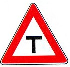

آزمون شماره 1 موتور سیکلت
1. نام این تابلو چیست؟

شانه خطرناک
پیچ های پی در پی
راه از سمت باریک می شود
راه لغزنده
2. نام این تابلو چیست؟
تونل
تقاطع
بن بست
پایان آزاد راه
3. نام این تابلو چیست؟
دست انداز
شانه خطرناک
راه لغزنده
چاله
4. این تابلو بیانگر چیست؟
پیچ به راست
گردش به چپ ممنوع
گردش به راست ممنوع
پیچ به چپ
5. این تابلو بیانگر چیست؟
ورود ممنوع
رعایت حق تقدم
عبور کلیه وسائل نقلیه ممنوع
خیابان اصلی
6. این تابلو بیانگر چیست؟
ورود ممنوع
رعایت حق تقدم
عبور کلیه وسایل نقلیه ممنوع
خیابان اصلی
7. این تابلو بیانگر چیست؟
سبقت ممنوع
سبقت مجاز
حق تقدم عبور با وسیله نقلیه مقابل است
حق تقدم عبور با شما
8. این تابلو بیانگر چیست؟
پایان تمام محدودیتها
عبور موتور سیکلت ممنوع
عبور کلیه وسایل نقلیه ممنوع
پایان محدوده پارک آزاد
9. این تابلو بیانگر چیست؟
پایان محدوده پارک آزاد
پایان محدوده توقف ممنوع
محدوده توقف ممنوع در ساعات معین
منطقه محدودیت سرعت
10. این تابلو بیانگر چیست؟
حداقل سرعت 60 کیلومتر
سرعت توصیه شده
سرعت بیش از 60 کیلومتر ممنوع
رعایت فاصله کمتر از 60 متر ممنوع
11. کدام تابلو بیانگر «کاهش خطوط عبور» است؟
کاهش خطوط عبور
پایان تمام محدودیتها
عبور موتور سیکلت ممنوع
عبور کلیه وسایل نقلیه ممنوع
12. این تابلو بیانگر چیست؟
پایان محدوده پارک آزاد
محدوده توقف ممنوع در ساعات معین
پایان محدوده توقف ممنوع
منطقه محدودیت سرعت
13. کدامیک از موارد زیر جان فرد را به خطر نمیاندازد؟
فقدان تنفس
ضربان شدید قلب
فقدان ضربان قلب
خونریزی شدید
14. کدام مورد از مصادیق حقوق شهروندی در ترافیک میباشد؟
حرکت بین خطوط ترافیک
حرکت با سرعت زیاد
حرکت مارپیچ در رانندگی
حرکت غیر ایمن
15. کدام مورد صحیح است در انجام کمکهای اولیه؟
باید روشی انتخاب شود که مفیدتر و صدمهای به مصدوم وارد نکند
باید بیمار را به سرعت از محل حادثه دور کنیم
اگر آرامش ندارید سریعتر کار را تمام کنید
روش سریعتر جواب میدهد، هر چند احتمال خطر وجود دارد
16. کدامیک از موارد زیر رانندگی با سرعت مطمئنه را بیان میکند؟
رانندگی بر اساس شرایط محیطی و جادهای
رانندگی با سرعتهای پایین
رانندگی با سرعتهای بالا
رانندگی در ساعات روز
17. حداقل تجهیزات یک موتور سوار چیست؟
کلاه ایمنی، کاپشن، شلوار مناسب، دستکش و چکمه
کلاه ایمنی و چکمه
کاپشن، شلوار مناسب و عینک
عینک، کلاه ایمنی، دستکش و چکمه
18. ایست وسیله نقلیه برای هر مدت ممنوع همان ...... است.
توقف
ایستادن
توقف ممنوع
ایستادن ممنوع
19. برای توقف در چند متری چراغ راهنمایی و رانندگی باید توقف کنیم؟
سه متری
دو متری
پنج متری
چهار متری
20. سبقت از طرف راست وسیله نقلیهای که در حال گردش به چپ میباشد ......
مجاز است
در هنگام روز مجاز است
ممنوع است
فقط در معابر شریانی درجه دو ممنوع است
30. هنگام سر خوردن چرخ عقب موتور سیکلت باید فرمان را به کدام سمت حرکت داد؟
مخالف جهت سر خوردن
نباید فرمان را حرکت داد
به همان سمت و متناسب با سر خوردن
فرمان را باید به صورت مستقیم
ارسال پاسخ